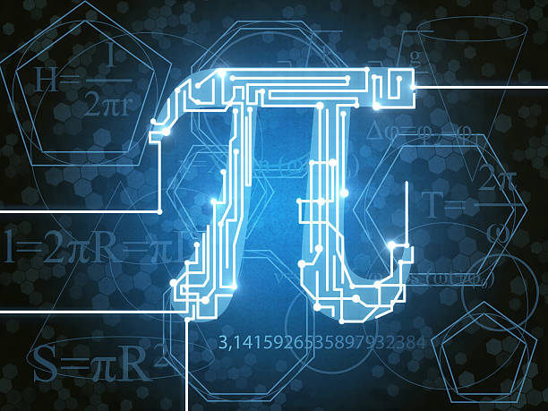

بمناسبة اليوم العالمي للرياضيات
the π day
متوسطة عباس عبد الكريم
تحت اشراف الاستاذة محتالي سامية
من تطوير نواري محمد زين الدين
π العدد ،او "ثابت ارخميدس"هو عدد عشري غير ناطق، وهو حاصل قسمة محيط الدائرة على قطرها،يرمز له بالحرف اليوناني "π" وهو عدد ثابت لجميع الدوائر، اي ان قيمة "بي" في اي دائرة كانت فإن قيمته ثابتة التي تساوي بالتقريب3.14159265359
يعود تاريخ استخدام العدد بي إلى القدماء المصريين والبابليين الذين اكتشفوا أن نسبة محيط الدائرة إلى قطرها تساوي 3.125. وفي وقت لاحق، وضع العالم اليوناني الذي في الصورة (أرخميدس 287-212 قبل الميلاد) طريقة لحساب العدد بي باستخدام المضلعات المتعددة التي تحيط بالدائرة

في العصر الحديث π
تم تطوير العديد من الطرق المختلفة لحساب العدد بي بدقة عالية، بما في ذلك استخدام الحواسيب. ويتم استخدام العدد باي في العديد من المجالات الرياضية والعلمية، بما في ذلك الفيزياء والهندسة وعلوم الحاسوب.

π كيف يكتب
تعتبر القيمة التقريبية لعدد بي هي 3.14159، وهي القيمة التي تم تقريبها بشكل عام لعدد بي، والتي يمكن استخدامها بصورة عامة في معظم التطبيقات العملية. ويجب الإشارة إلى أن هذه القيمة هي تقريبية وتعتمد على عدد محدود من الأرقام العشرية، ولا يمكن أن تكون دقيقة بنسبة 100٪. يمكن استخدام قيمة بي التقريبية في العديد من الحسابات الرياضية البسيطة والمتوسطة والمعقدة، ولا يوجد حاجة لاستخدام قيمة باي الدقيقة إلا في الحسابات العلمية الدقيقة والتي تتطلب دقة أكبر في الحسابات ويتم الحصول على القيمة التقريبية لبي من خلال استخدام العديد من التقنيات الحسابية المختلفة، بما في ذلك استخدام تقنية تطبيق النظرية الإحصائية والتي تعتمد على استخدام العينة الإحصائية الكبيرة وتحليلها، وكذلك استخدام تقنية تطبيق الجبر الخطي والتي تستخدم في حسابات الفضاء الخطي والرياضيات الهندسية. وبشكل عام، يمكن القول بأن القيمة التقريبية لبي تستخدم بشكل واسع في الحياة العملية والحسابات اليومية، وهي قيمة كافية لإجراء معظم الحسابات البسيطة والمتوسطة والمعقدة، ولا يوجد حاجة لاستخدام القيمة الدقيقة إلا في الحسابات العلمية الدقيقة والتي تتطلب دقة أعلى.

العدد بي والتقدم التكنولوجي
يعتبر العدد بي واحداً من الأرقام الرياضية الأساسية التي تستخدم في العديد من الحسابات والتطبيقات العلمية المختلفة. ويحتل العدد بي مكانة مهمة في التقدم العلمي، حيث يستخدم في العديد من المجالات العلمية المختلفة، مثل الفيزياء والرياضيات والهندسة والتكنولوجيا.
في مجال الفيزياء، يلعب العدد بي دورًا حاسمًا في فهم وتحليل العديد من الظواهر الطبيعية، مثل التفاعلات النووية والجاذبية والحركة الدورانية. ويستخدم العدد بي في حساب العديد من الظواهر الفيزيائية، مثل حساب مساحة الدائرة والأسطح الكروية وحجم الكرة والأسطوانة والمخروط.
وفي مجال الرياضيات، يستخدم العدد بي في حساب العديد من الظواهر الرياضية، مثل مساحة الدائرة ومحيطها وحجم الكرة والأسطوانة والمخروط، وكذلك في حساب الأسس الرياضية والمتغيرات الرياضية.
وفي مجال الهندسة، يستخدم العدد بي في حساب الأسطح الكروية والمنحنية والتي تستخدم في تصميم الأشكال الهندسية والبنية المعمارية المختلفة. وفي مجال التكنولوجيا، يستخدم العدد بي في تصميم العديد من التطبيقات والأجهزة الإلكترونية والحاسوبية، مثل تصميم الأقراص الصلبة والشاشات والأجهزة المتحركة.
وبشكل عام، يمكن القول بأن دور العدد بي في التقدم العلمي كبير جداً، حيث يستخدم في العديد من المجالات العلمية المختلفة، ويساعد في فهم وتحليل العديد من الظواهر الطبية والعلمية الاخرى في مجالات أخرى مثل العلوم الطبيعية والتجارة والاقتصاد والهندسة المعمارية
وبهذا نصل إلى نهاية موضوعنا عن العدد "بي"، إنه عدد لا نهائي الخانات ولا يمكن تمثيله بصورة كاملة، كما لا يمكن ضم لبه في صفحة واحدة، ويعتبر أحد أهم الأعداد في الرياضيات والفيزياء والهندسة وغيرها من المجالات العلمية. وتتميز قيمته بالدقة والتقريبية في نفس الوقت، ويمكن استخدامه في حسابات الدوائر والأشكال الهندسية وغيرها من التطبيقات العلمية. ويظل عدد "بي" محط اهتمام العلماء والباحثين حتى اليوم، حيث تتم دراسة خصائصه وتطبيقاته بشكل دائم في سبيل فهم العالم وتطويره.